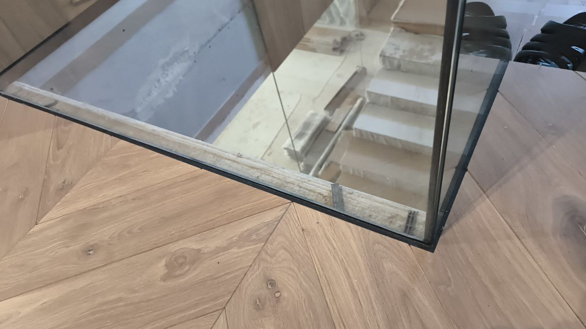
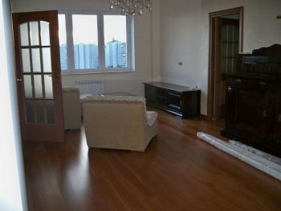
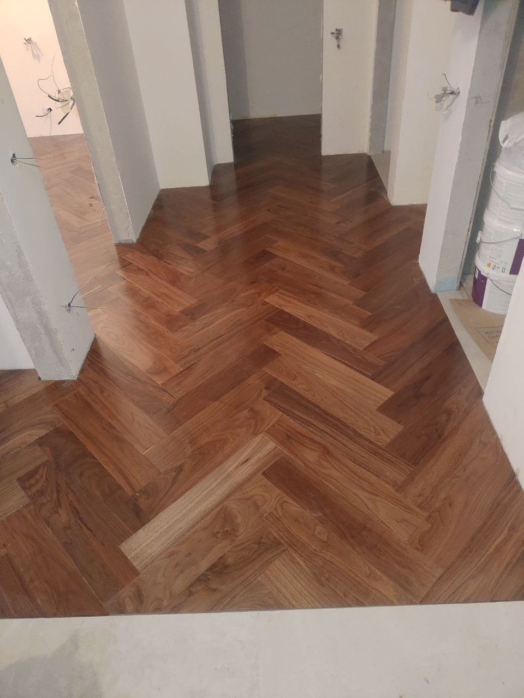

В данном разделе предусмотрены все положения и концепции для профессионального подхода к решению проекта с любой платформы предоставления услуг на территории Российской Федерации.

Идеи и реализация каждого проекта проходит несколько этапов контроля перед его исполнением и при его составлении, дизайнер качественно продумывает тончайшие узлы, которые в конечном итоге подчёркивают неповторимость проекта в сложном дизайне.
Долгосрочное сотрудничество с разностороннем и высокоидейным дизайнером не оставляет времени для скучных ремонтов. Неповторяющиеся проекты и бесконечность идей делают отделку каждого объекта неповторимым искусством решений и предложений для клиента. Сколько стоит проект квартиры в Москве. Приличный объём заставляет принимать решения на продолжении не быстрого времени. Но для оперативного вмешательства дипломированные профессионалы не затягивают с решением требований от заказчика

Вот несколько вариантов описания ремонтной компании с 20-летним опытом — от официального (для сайта и коммерческих предложений) до эмоционального (для соцсетей и листовок). Выберите тот, который лучше подходит под ваш тон общения с клиентами. Вариант 1: Для сайта (акцент на надежность и экспертизу) Заголовок: 20 лет доверия: ремонт, который держит марку. Основной текст: Два десятилетия на рынке — это не просто срок, это история из сотен завершенных объектов и тысяч благодарных семей. С 2004 года мы прошли путь от малых форм до ремонта премиум-класса, но неизменным осталось одно: наше слово и качество отделки. За 20 лет мы: Отработали технологию до идеала. Мы знаем, как поведет себя материал через 5 лет, где нужно усилить звукоизоляцию и как избежать трещин на стыках. Создали команду единомышленников. У нас нет случайных людей. Средний стаж работы мастера в нашей компании — от 7 лет. Собрали базу проверенных подрядчиков. Сантехника, электрика, стяжка — все этапы мы контролируем сами, без «сюрпризов» от субподрядчиков. Мы не гадаем, как правильно. Мы просто работаем по стандартам, выработанным за 20 лет практики. Результат: ремонт, который не требует переделки через год. Вариант 2: Акцент на «без посредников» и честность (отлично для Авито и Юлы) Заголовок: Ремонт без молодых ошибок. 20 лет стажа. Основной текст: Почему клиенты выбирают нас уже 20 лет? Потому что мы перестали экспериментировать над вашими деньгами. Часто бригады с опытом 2-3 года «набивают шишки» на заказчиках: закупают лишнее, переделывают кривую геометрию или бросают объект на полпути. Мы прошли этот этап в начале 2000-х. Сейчас у нас: Точная смета до копейки (не «+100% по факту», как у новичков). Соблюдение сроков — мы умеем рассчитывать силы, потому что знаем реальную скорость работ. Гарантия на все этапы 5 лет (подкрепленная репутацией, а не пустыми обещаниями). Пригласите нас на замер. Мы просто покажем альбом наших объектов за последние 5 лет — и вы поймете разницу между ремонтом и ремонтом с характером. Вариант 3: Эмоциональный и короткий (для Instagram / VK) Заголовок: Ваш идеальный ремонт — это наши 20 лет опыта. Основной текст: Ремонт не должен быть хлопотным. И мы доказываем это 20 лет подряд. В 2024 году мы продолжаем делать то, что начали в 2004-м: превращать «голые стены» в продуманное, стильное и, главное, прочное жилье. Почему 20 лет — это круто для вас?

✅ Мы уже закупили всё оборудование (перфораторы, маяки, штукатурные станции) — вы не платите за «инструмент дяди Пети». ✅ Мы видели кризисы 2008, 2014, 2020 и 2022. Никто не бросит объект из-за «внезапного подорожания» — у нас есть финансовая подушка и склад материалов. ✅ Мы перестали спорить с дизайнерами. Мы дополняем их идеи технической грамотностью. Результат: Вы переезжаете в квартиру, которую не стыдно показать гостям и в которой приятно просыпаться. Звоните, покажите нам свой объект — посоветуем, как сэкономить ваш бюджет (бесплатно). Вариант 4: Деловой (для тендеров и коммерческих помещений) Заголовок: Ремонт под ключ: 20 лет в сегменте жилой и коммерческой недвижимости. Основной текст: ООО «[Название]» — системный подрядчик с 20-летней историей. Мы обладаем членством в СРО (если есть), лицензиями на электромонтаж и допускам к высотным работам. Наши преимущества как партнера: Финансовая стабильность. Оборот компании позволяет выполнять объекты площадью до 1000 м2 без предоплаты материалов за счет заказчика. Контроль качества. Ежедневный фотоотчет, поэтапная приемка с замером влажности и геометрии стен. Скорость. Бригады работают посменно при необходимости. Сроки прописаны в договоре с неустойкой. Более 200 завершенных объектов: офисы банков, загородные дома, квартиры в ЖК бизнес-класса. Давайте подберем график работ под ваши задачи. Рекомендация: что добавить к тексту? Любой вариант станет сильнее, если вы добавите цифры: «1200 сданных объектов» «200 постоянных подрядчиков» «На 85% клиентов приходят по сарафанному радио» Фото ремонта 10-летней давности (как доказательство, что стены до сих пор ровные).